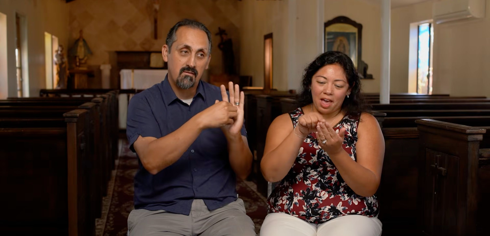
A fé nos momentos mais difíceis.
Conheça a família Hernandez. Uma história de amor, incerteza e da oração que os sustenta.
8:00 · Family Theater Productions

Conheça a família Hernandez. Uma história de amor, incerteza e da oração que os sustenta.
8:00 · Family Theater Productions

Through the Mysteries explora a oração, as perguntas e a vida cotidiana que a acompanha.
Podcast · Through the Mysteries

Conversas sinceras sobre fé, família e como abrir espaço para Deus. Comece com Scott Weeman.
Video & audio · How's Your Prayer Life?
Acompanhe o padre Patrick Peyton nos mistérios gozosos, com cenas da vida de Jesus e Maria.
16:26 · Family Rosary
Histórias de amor, superação e oração da Family Theater Productions.
Conheça famílias que reservam tempo para rezar em casa.
Media, social platforms and AI: thoughtful guidance for parents.
Reze com o padre Peyton ou acompanhe uma gravação do Rosário diário.
2.66M views
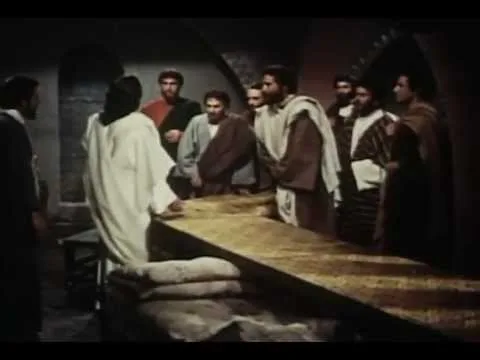
Reproduzir16:232.39M views
 Reproduzir16:23
Reproduzir16:232.06M views
 Reproduzir
Reproduzir1.11M views
 Reproduzir29:37
Reproduzir29:37146 views
 Reproduzir25:38
Reproduzir25:3861 views
 Reproduzir31:49
Reproduzir31:49121 views
 Reproduzir30:13
Reproduzir30:13178 views
 Reproduzir36:08
Reproduzir36:08118 views
 Reproduzir29:13
Reproduzir29:13150 views
Duas séries com muitas maneiras de viver a fé no dia a dia.
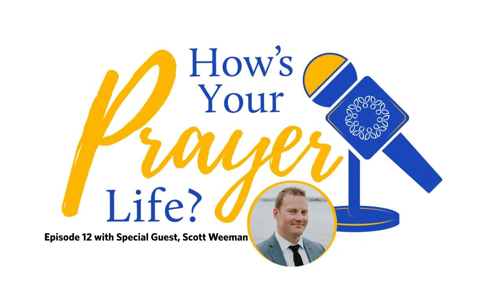
Short reflections with Father Fulgens Katende, C.S.C.
Questions, stories and a fresh way into the Rosary.
Ouvir Ouvir
Ouvir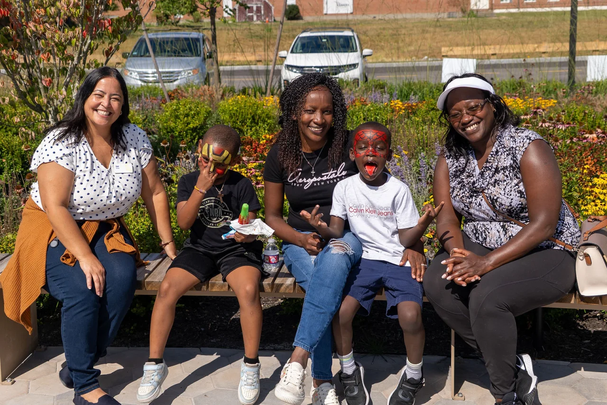
Ouvir Ouvir
Ouvir Ouvir
Ouvir Ouvir
Ouvir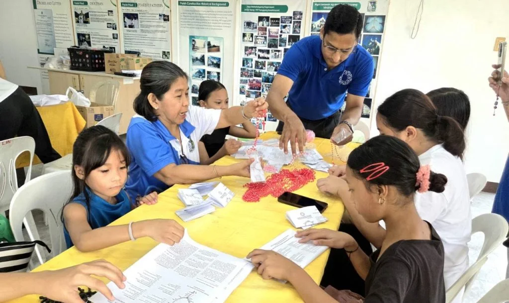
Ouvir Ouvir
Ouvir OuvirOuvirOuvir
OuvirOuvirOuvir OuvirOuvirOuvirOuvirOuvirOuvirOuvir
OuvirOuvirOuvirOuvirOuvirOuvirOuvirReal conversations about prayer in everyday life.
Watch22:08With Scott Weeman
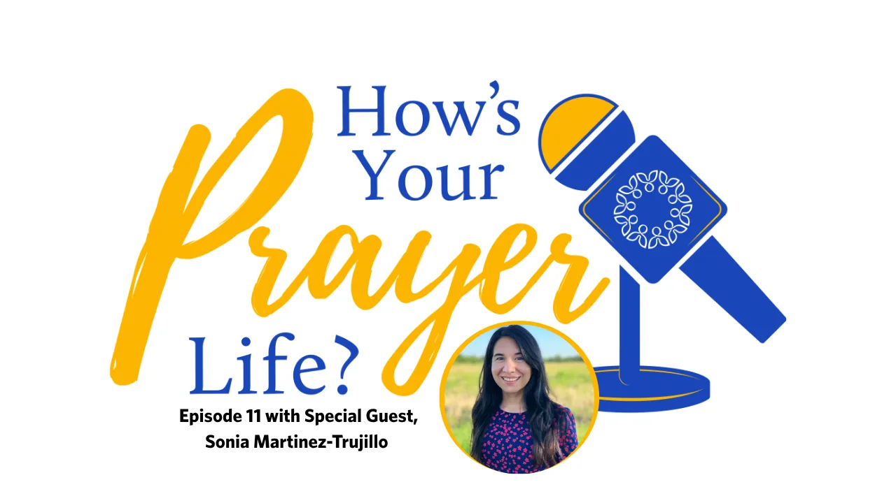
OuvirWith Sonia Martinez-Trujillo
With Jessica Benfield
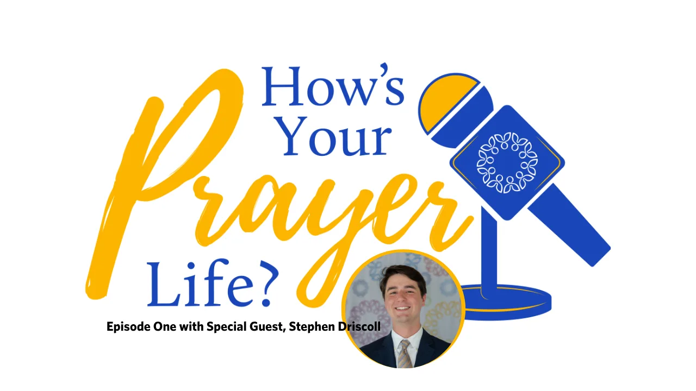
OuvirWith Stephen Driscoll
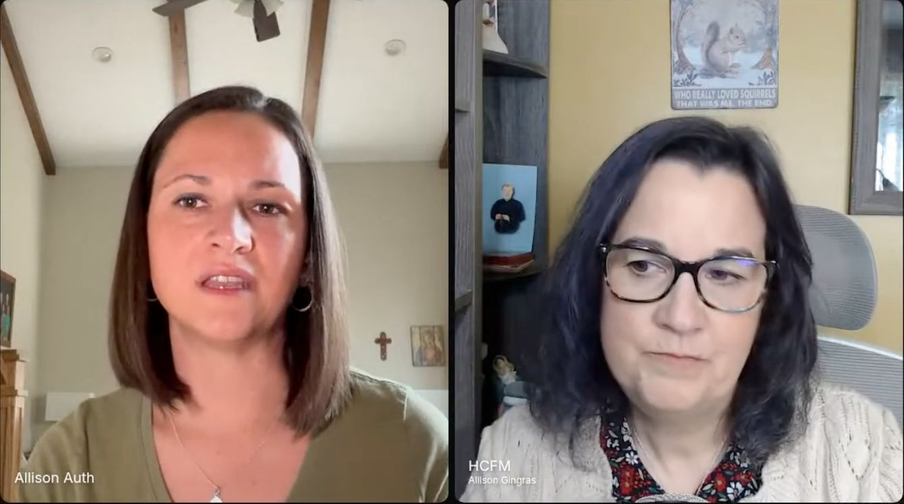
Watch23:23With Allison Auth
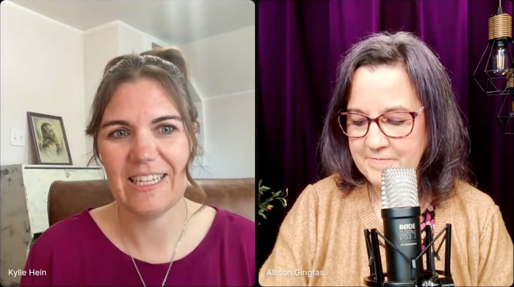
Watch22:09With Kylie Hein
With Krystal Quagliara
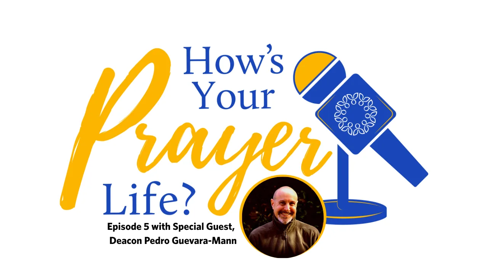
OuvirWith Deacon Pedro Guevara-Mann
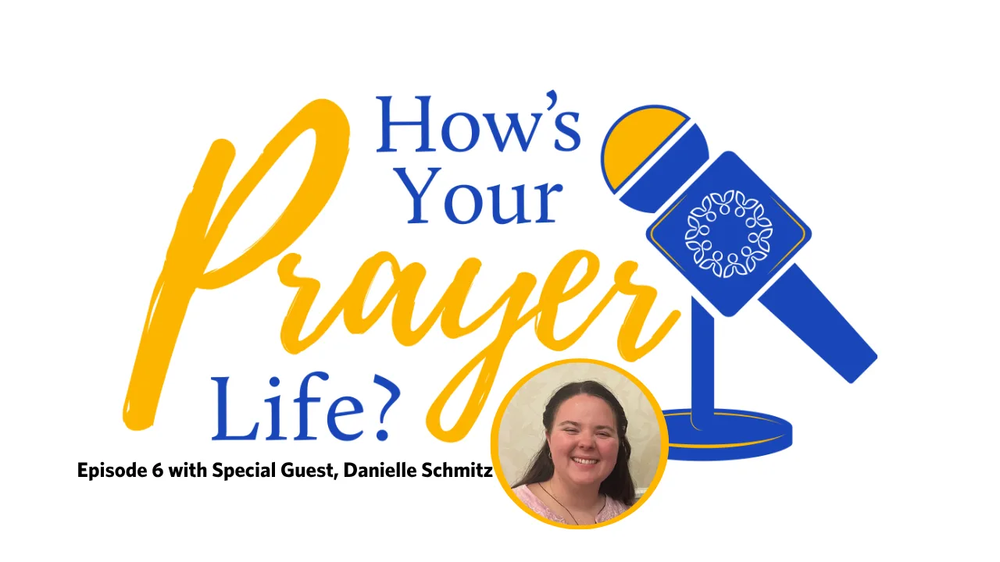
OuvirWith Danielle Schmitz
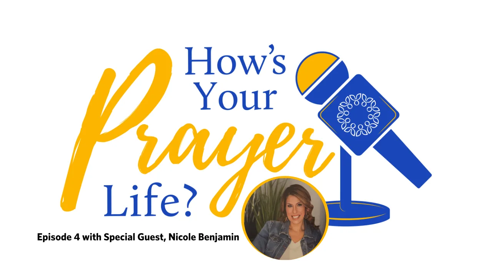
OuvirWith Nicole Benjamin
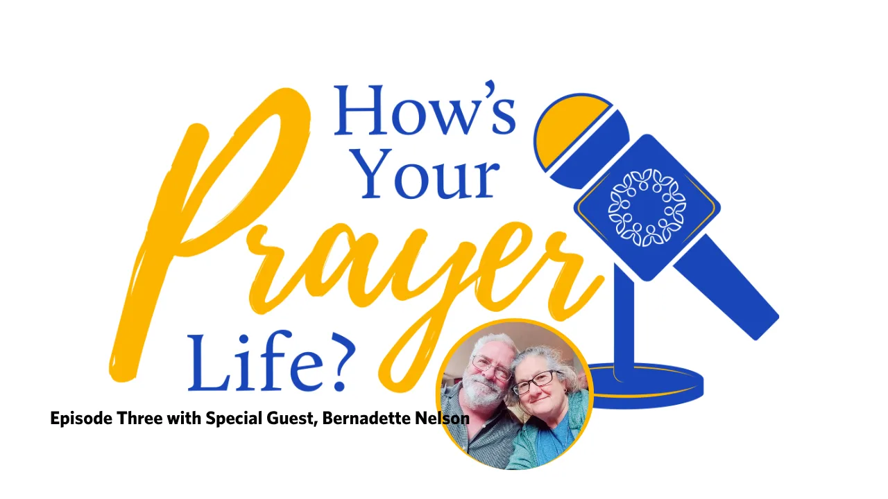
OuvirWith Bernadette Nelson
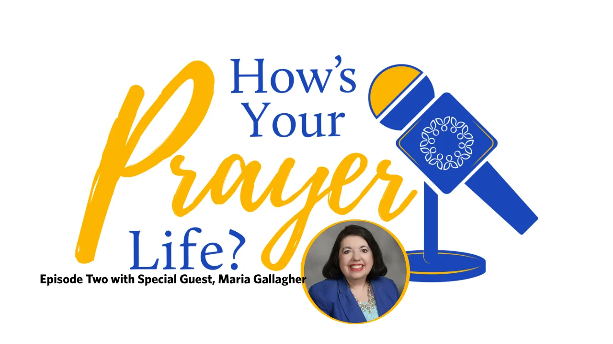
OuvirWith Maria Gallagher
Follow the opening prayers in these short videos.
Rosary at 11:30 a.m. and Mass at noon, Monday–Friday, Eastern Time, from The Father Peyton Center.
Watch the daily broadcast here57 programs in the collection
Try a shorter search, another topic, or reset the filters.